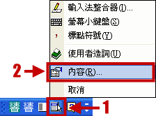
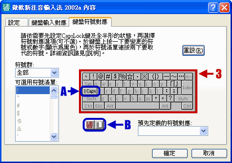

冷飯熱炒微軟新注音輸入法：標點符號篇
用慣了新酷音輸入法，於是養成了按 Shift 就能打出所有標點符號的習慣。本文介紹微軟新注音輸入法 2002a 的變通設定法 (不適用於 2003 版)。
操作步驟
步驟 1

1. 進入微軟新注音輸入法模式，然後按「工具選單」。
2. 接著在選單裡按「內容」。
步驟 2

3. 最後點選「標點符號對應」頁籤，就能在「鍵盤」示意圖中把半形標點符號全部改成全形標點符號，這樣一來便可以和國音輸入法一樣直接用 Shift 輸出全形標點符號了。
A. B. 另外請注意圖中標有 A 與 B 的部份，前者可以切換「Caps Lock 狀態」，後者可以切換「全形 / 半形模式」。如果你需要進一步控制這兩種狀態模式下的符號，可以點擊這兩部份來變換。
原理很簡單
你可能覺得奇怪？這樣就能方便地打出全形標點符號。
其實原理很簡單，在中文輸入模式中，按 Shift 鍵、搭配打字區的按鍵，本來就能輸出半形的英數字元。這裡只是把半形英數字元中的標點符號全部改成全形，這樣原本「Shift + 標點符號」應該輸出半形標點符號的情況，就會變成輸出全形標點符號了！
這是由國音輸入法而來的按法，畢竟，都已經在中文輸入模式底下了，怎會還需要混雜英數字元標點符號呢？於是索性就把標點符號的部份全部改成全形，這樣一來果然順手多了。 (但是因為只改標點符號的部份，所以不影響英文字母的輸入。)
僅適用 2002a 版
以上僅適用於 2002a 版的微軟新注音輸入法。
從 2003 版開始，微軟新注音輸入法內建一套類似「Shift + 標點符號」的按法：「Ctrl + 特殊符號」，於是這個設定介面便找不到了。
但是微軟這套快速按法，需要配合「上半部 / 下半部」的字元關係，因此想打全形問號變成要按三個鍵「Ctrl + Shift + /」，這樣才會出現「？」。 (因為 ? 是上半部符號，/ 是下半部符號。)
微軟的按法其實非常標準，用的人只需記得要輸出全形符號按 Ctrl 就行了，完全不會與一般人的習慣相衝突。而國音輸入法有一兩個標點符號的位置是變通而來的，沒查說明書還真不知道放在哪。
但我自己還是覺得國音輸入法的按法更為直接、順手，因此繼續使用 2002a 版來自己設定標點符號的位置，讓習慣接近國音輸入法。況且，與習慣相衝突的標點符號也才「；」「、」而已，打起標點符號卻是無比暢快啊～！